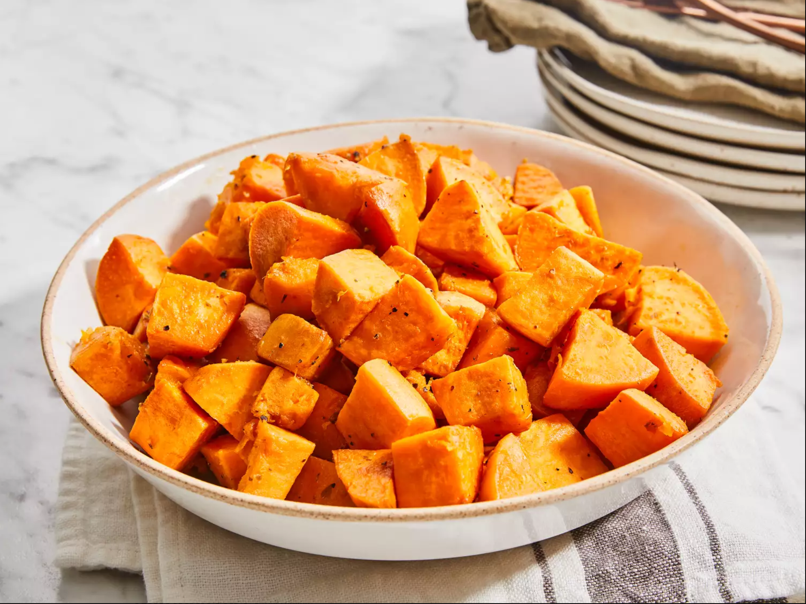

Baked sweet potatoes
to cook an amazing dish of Baked sweet potatoes, this is what you need:
- 2 tablespoons olive oil
- 3 large sweet potatoes
- 2 pinch dried oregano
- 2 pinches salt
- 2 pinches ground black pepper
Instructions:
- gather all ingredients
- Preheat the oven to 350 degrees F (175 degrees C). Coat the bottom of a glass or nonstick baking dish with olive oil, just enough to coat.
- Wash and peel sweet potatoes; cut into medium pieces.
- Place in the baking dish and stir to coat with olive oil. Sprinkle with oregano, salt, and pepper.
- Bake in the preheated oven until soft and fork-tender, about 45 minutes to 1 hour.
- Enjoy!
